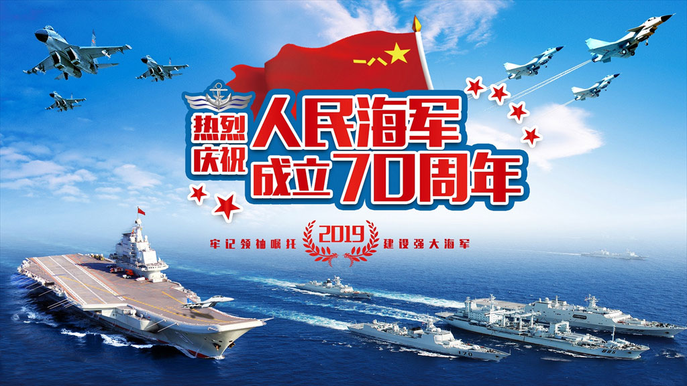

海军成立70周年
- 4月23日，是中国人民解放军海军成立70周年纪念日。1949年4月23日，在渡江战役的炮火中，靠着最初起义投诚的几条老舰，中国人民海军诞生了！
不曾忘记，甲午战争北洋舰队全军覆没，中国此陷入了长达百年的黑暗岁月。永远铭记，有海无防，国将不国！
知耻方能后勇，决不能重蹈覆辙！我们一直在追赶！ 炮火中诞生、战斗中成长、发展中壮大，70年来，人民海军从零到有，一路劈波斩浪，纵横海疆，勇闯大洋。
70年来，人民海军从弱到强，一路步履铿锵，走向深蓝，向海图强。